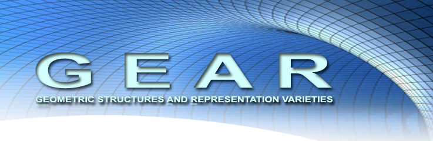

Teichmüller Theory Seminar
2015-2018
The Teichmüller theory seminar of Rutgers University - Newark is an informal seminar organized by Jane Gilman, John Loftin, Brice Loustau and Anastasiia Tsvietkova. It is supported by the GEAR network. The talks are video recorded (starting Spring 2016) and are available here.
The seminar usually meets on Mondays or Wednesdays at 4pm in Smith Hall room 204. All are welcome.
Schedule
Spring 2018
| Date | Speaker | Title | Details |
|---|---|---|---|
| 1/29/2018 | Hugo Parlier (University of Luxembourg) |
Quantifying isospectral finiteness | Announcement & Abstract |
| 2/19/2018 | David Aulicino (Brooklyn College) |
Trajectories on the Platonic Solids |
Announcement & Abstract --> Video! <-- |
| 3/07/2018 Cancelled! |
(Florida State University / AMS Acquisitions Editor) |
Announcement & Abstract | |
| 3/21/2018 Cancelled! |
(University of Luxembourg) |
Announcement & Abstract | |
| 4/4/2018 | Linda Ness (*) (Rutgers University) |
Representing Data as Measures Using Product Formalisms |
Announcement & Abstract --> Video! <-- |
| 4/18/2018 | Andrew Yarmola (*) (University of Luxembourg) |
Circle packings and Delaunay circle patterns for complex projective structures |
Announcement & Abstract --> Video! <-- |
Fall 2017
| Date | Speaker | Title | Details |
|---|---|---|---|
| 9/27/2017 | Nicolas Tholozan (*) (CNRS - École Normale Supérieure) |
Teichmüller theory and higher |
Announcement & Abstract --> Video! <-- |
| 10/11/2017 4:30pm! |
Claude Lebrun (*) (Stony Brook University) |
Mass, Scalar Curvature, Kaehler Geometry, and All That |
Announcement & Abstract Talk slides --> Video! <-- |
| 11/01/2017 | Samuel Grushevsky (*) (Stony Brook University) |
Degenerations of Riemann surfaces together with a meromorphic differential |
Announcement & Abstract --> Video! <-- |
| 11/20/2017 Monday! |
Tengren Zhang (Caltech) |
The Goldman symplectic form on the Hitchin component |
Announcement & Abstract --> Video! <-- |
| 12/06/2017 | Edgar Bering (Temple University) |
A McCarthy-type theorem for linearly growing outer automorphisms of a free group |
Announcement & Abstract --> Video! <-- |
(*) Joint with the Mathematics Colloquium.
Spring 2017
| Date | Speaker | Title | Details |
|---|---|---|---|
| 01/18/2017 | Peter Sarnak (*) (Princeton University / IAS) |
Navigating PU(2), Golden Gates and Strong Approximation |
Announcement & Abstract --> Video! <-- (**) |
| 01/30/2017 | Anastasiia Tsvietkova (Rutgers University) |
The number of surfaces of fixed genus in an alternating link complement |
Announcement & Abstract --> Video! <-- |
| 02/08/2017 | Dave Futer (*) (Temple University) |
Can you hear the shape of a 3-manifold? |
Announcement & Abstract --> Video! <-- |
| 02/22/2017 | David Gabai (*) (Princeton University) |
Maximal cusps of low volume |
Announcement & Abstract --> Video! <-- |
| 03/01/2017 | Lee Mosher (*) (Rutgers University) |
Hyperbolic actions and second bounded cohomology for subgroups of $\operatorname{Out}(F_n)$ | Announcement & Abstract |
| 03/20/2017 | Qiongling Li (CalTech / Aarhus) |
Hitchin equations for Higgs bundles of quiver type |
Announcement & Abstract --> Video! <-- |
| 03/22/2017 | Vincent Alberge (Fordham University) Smith 206 2:45pm! |
Extremal length geometry on Teichmüller spaces |
Announcement & Abstract --> Video! <-- |
| 04/12/2017 | Jane Gilman (*) (Rutgers University) |
Palindromes in Teichmüller Theory | Announcement & Abstract |
| 04/19/2017 | Mark Feighn (*) (Rutgers University) |
The boundary of the free splitting complex | Announcement & Abstract |
(*) Joint with the Mathematics Colloquium.
Fall 2016
| Date | Speaker | Title | Details |
|---|---|---|---|
| 10/19/2016 | Moira Chas (*) (Stony Brook University) |
Computer driven questions, pre-theorems and theorems in geometry |
Announcement & Abstract --> Video! <-- |
| 10/26/2016 | Dave Futer (*) (Temple University) |
Can you hear the shape of a 3-manifold? | Announcement & Abstract |
| 11/09/2016 | Abhijit Champanerkar (*) (City University of New York) |
Knots, graphs, geometry and densities | Announcement & Abstract |
| 11/16/2016 | Feng Luo (*) (Rutgers University - New Brunswick) |
Discrete uniformization theorem for polyhedral surfaces | Announcement & Abstract |
| 11/30/2016 | Shamgar Gurevich (*) (University of Wisconsin-Madison) |
Small Representations of finite classical groups | Announcement & Abstract |
| 12/13/2016 Tuesday! |
Walter Neumann (*) (Columbia University) |
Hilbert's 3rd Problem, Topology, and Number Theory |
Announcement & Abstract --> Video! <-- |
(*) Joint with the Mathematics Colloquium.
Spring 2016
| Date | Speaker | Title | Details |
|---|---|---|---|
| 01/21/2016 | Sara Maloni (Brown University) |
Mapping class group actions on character varieties |
Announcement & Abstract --> Video! <-- |
| 02/04/2016 | Andy Sanders (University of Illinois at Chicago) |
Complex deformations of Anosov representations |
Announcement & Abstract --> Video! <-- |
| 02/22/2016 | Alan Reid (University of Texas at Austin) |
Determining hyperbolic 3-manifolds by geometric spectra |
Announcement & Abstract --> Video! <-- |
| 02/25/2016 | Jonah Gaster (Boston College) |
Lifting curves simply |
Announcement & Abstract --> Video! <-- |
| 03/21/2016 | Richard Kent (University of Wisconsin-Madison) |
Spacious knots |
Announcement & Abstract --> Video! <-- |
| 04/04/2016 | Pei Wang (Rutgers University - Newark) |
The Rips machine |
Announcement & Abstract --> Video! <-- |
| 04/11/2016 | Ara Basmajian (CUNY) |
Arcs and orthogeodesics on hyperbolic surfaces |
Announcement & Abstract --> Video! <-- |
| 04/18/2016 | Jacob Sturm (Rutgers University - Newark) |
Construction of the moduli space of compact Riemann surfaces | Announcement & Abstract |
| 04/25/2016 | Mark Feighn (Rutgers Univerity - Newark) |
Computing with relative train tracks | Announcement & Abstract |
Fall 2015
| Date | Speaker | Title | Details |
|---|---|---|---|
| 09/21/2015 | Brice Loustau (Rutgers University - Newark) |
Computing equivariant harmonic maps from $\mathbb{H}^2$ to $\mathbb{H}^3$ | Announcement & Abstract |
| 10/05/2015 | John Loftin (Rutgers University - Newark) |
An introduction to convex real projective structures on surfaces and cubic differentials | Announcement & Abstract |
| 11/09/2015 | Lee Mosher (Rutgers University - Newark) |
Teichmüller spaces, curve complexes, and negative curvature | Announcement & Abstract |
| 12/07/2015 | Jane Gilman (Rutgers University - Newark) |
Automorphisms and Primitive Curve Lengths on Pairs of Pants | Announcement & Abstract |
Video
With the support of GEAR, the talks are video recorded and uploaded on the internet. Please visit our Youtube channel.
Mathematics Colloquium
The Mathematics Colloquium of Rutgers University - Newark meets on Wednesdays at 4pm. Please follow this link for the dedicated web page.
Organizers
Contact: brice@loustau.eu.